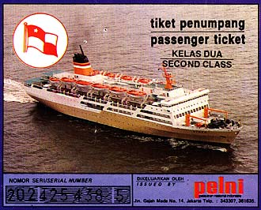

Sent: 11 Jan 2000 14:25 GMT
web version. |
 |
| Prior Trav-E-Log: Sulawesi | Pelni is ... roaches and hot water and ... |
(Note:) This is the 16th in a series of Trav-E-Logs sent while traveling in S.E.Asia between Oct 16, 1999 and Jan 22, 2000.Hi Folks,
Three messages are being sent today, so please read them in the proper order. First read "Sulawesi", then this one, "Pelni Again", and lastly "Flores". THIS IS the 2nd. message, Pelni Again. Note the phonetic spelling of some words below.
Second kelas on a Pelni ship is worlds different from ekonomi kelas. The latter also serves breakfast: Tasteless rice slopped on an aluminum try, and a hard boiled egg if you are lucky. No eating utensils, no chair, no table, no bench, nothing. Find a place to sit on the deck, which is littered with garbage, and consume. Second kelas, on the other hand, is served meals with tablecloths, napkins, condiments, bread and water, everything you would expect in a western restaurant. The noon meal even had entertainment -- a small band with singer. Other second kelas benefits include your own bunk in a room shared with 3 others, a locker with lock and key for your backpack, travel sack, and shoes, and a hallway not filled with garbage. But the best part of traveling one class above ekonomi is in the bathroom. On the other five days and four nights aboard a Pelni ship, I could not enter a bathroom without wading in liquid, about 1" deep. This liquid was emanating from urinals, showers, and wash basins. Only the hot water plumbing worked, which was scalding in the wash basin, but very warm in the other locations. The semi-private bath in second kelas, it turned out, had a similar plumbing problem on the sink, but as most of the drains worked, the floor remained reasonably clean and dry. The showers felt heavenly, and in almost clean surroundings, were among the best since leaving Los Angles.
Unlike my other Pelni experiences, this crossing was made talking to Westerners. Chris and Matt are from Canada, Jesper from Denmark, and Robert from England. We all met in Makasar at the Legends Hostel, all want to go to Flores, and all are thinking that seeing the famous 3-colored lakes of Kelimutu on the first dawn of 2000 might be an appropriate way to start Y2K. Blond hair on a 6'+ frame means it is somewhat easy to spot Chris in a crowd of Indonesians. We agree to meet by finding Chris at the port in Maumere, Flores.